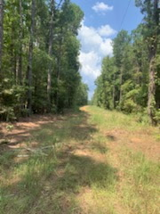

The Sacred Land
Delley Ancestral Land in Powhatan, Virginia
A Living Teacher
The land we gather on is not merely property - it is a living teacher, a sacred space that holds the wisdom and energy of generations. This is Delley ancestral land, and we are honored to be its current stewards.
Visitor Protocols
🙏 By Invitation Only
The land is open by invitation for spiritual and educational purposes. Contact Rev Dele before visiting.
💫 Sacred Conduct
Approach with reverence. No drugs, alcohol, or disrespectful behavior. This is sacred space.
🌿 Leave No Trace
Take only memories, leave only gratitude. Respect all life - plant, animal, and spirit.

What Happens Here
- 🪷 Meditation and spiritual practices
- 🌱 Land stewardship and regenerative agriculture
- 🎓 Educational workshops and teachings
- 🔥 Sacred ceremonies and gatherings
- 🏡 Resilience School cohort meetings